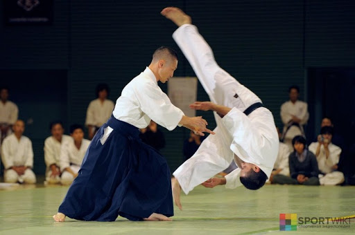
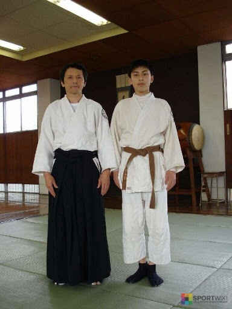

Айкидо — боевое искусство, представляющее собой синтез древних техник самообороны и борьбы в сочетании с философией гармонии духа.

История возникновения айкидо.
Оснавателем айкидо считается Морихей Уэсиба, а год основания - 1925. Заняться изучением практики мужчину подвигли его болезненность и хилость. За годы освоения древних единоборств Уэсиба из слабого и уязвимого ребёнка превратился в крепкого, выносливого и мускулистого мужчину. Он перенимал опыт у учителей многих направлений. Но несмотря идеальное тело и славу непобедимого воина, его духа не находила покоя. Тогда он обратился к религиозным и филосовским учениям. Итог - создание собственной школы Айкикай, которое положила начало боевому искусству под названием айкидо и объединила в себе физическое и духовное развитие.
Философия и принципы айкидо.
Философия айкидо заключается в гармонии тела и духа, дыхания и движения, в полном отказе от собственных амбиций. Это не просто боевое искусство. Это движения, направленные на защиту, а не на атаку. Здесь упор делается на силу разума, а не на физическую силу. Во время борьбы тело должно быть расслаблено, а ум напряжённым.
Цель айкидо - не победа. Цель айкидо - побудить соперника не нападать и перенаправить его агрессию в мирное русло. Цель айкидо - использовать агрессию опонента против него же самого, а самому остаться в духовной безмятежности.
Философия айкидо - равнение на природу, где царит гармония и нет конфликтов.
К основным принципам айкидо относятся:
Стили айкидо.
Хотя основатель учения был против выделения разных стилей борьбы, это неминуемо происходило. Ученики Уэсиба открывали собственные школы и преподавали практику исходя из собственного её видения. А после его смерти школы основывались уже учениками учеников. На сегодняшний день известно более 30 автономных направлений айкидо, среди которых:
Экипировка и оружие.
Для занятий понадобится спортивная одежда, позволяющая легко передвигаться, в том числе и на коленях. Серьёзный подход к айкидо требует приобретения специальной одежды - кэйгори, кимоно для айкидо.

Айкидо предполагает использование целого ряда оружия, среди которого: